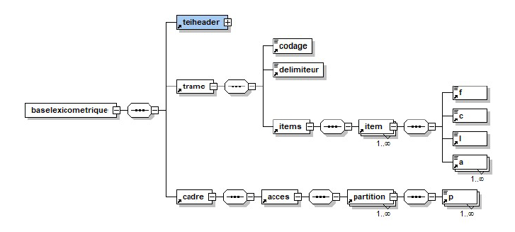
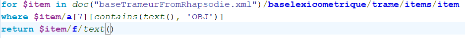
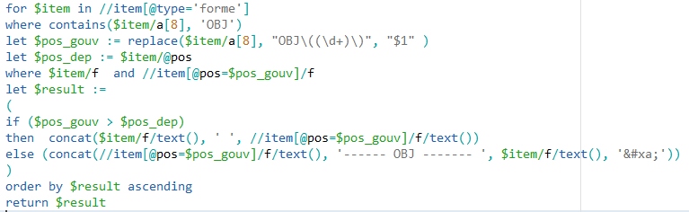

Structure du fichier de départ

Partie 1 : XSLT
1. Construire une feuille de styles pour afficher uniquement le texte (sortie TXT)
2. Construire une feuille de styles pour afficher (au format HTML) le texte en insérant sur chaque item sa POS
3. Construire une feuille de styles pour extraire (en format TXT) au moins 2 patrons morphosyntaxiques de longueurs différentes
4. Construire une feuille de styles pour extraire (au format TXT) les items en relation de dépendance syntaxique de type SUJET (les classer et les compter)
Pour cet exercice, nous avons dans un premier temps crée une feuille de style xslt qui extrait les items, et ensuite nous avons utilisé la commande Unix ci-dessous afin de compter les occurrences. De plus, nous avons dû utiliser l'échantillon, car nous avons eu des erreurs concernant un dépassement de mémoire vive par xsltproc.
xsltproc Trameur_4.xsl baseTrameurFromRhapsodie.xml | sort | uniq -c | sort -gr > Trameur_4.txt
5. Construire une feuille de styles pour extraire la liste des POS en relation de dépendance syntaxique de type SUJET (les classer et les compter)
Encore une fois, nous avons utilisé en plus de la feuille de style, une commande afin de compter les occurrences de chaque POS. Cependant, nous avons eu une limite de mémoire vive de la part de XLSTPROC pour cette feuille de style, donc nous avons lancé le traitement sur le fichier echantillon.
xsltproc Trameur_5.xsl baseTrameurFromRhapsodie-echantillon.xml | sort | uniq -c | sort -gr > Trameur_5.txt
Partie 2 : Xquery (via BaseX)
1. Construire une requête pour extraire les items portant une relation de dépendance syntaxique de type OBJ
Requête 1
2. Construire une requête pour extraire les items en relation de dépendance syntaxique de type OBJ (on affichera les formes ou les lemmes connectés par cette relation)
Requête 2
